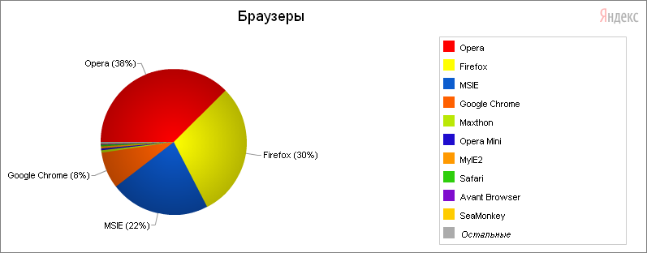
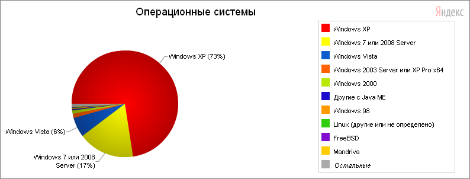
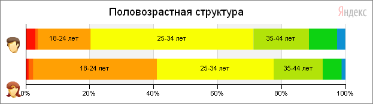
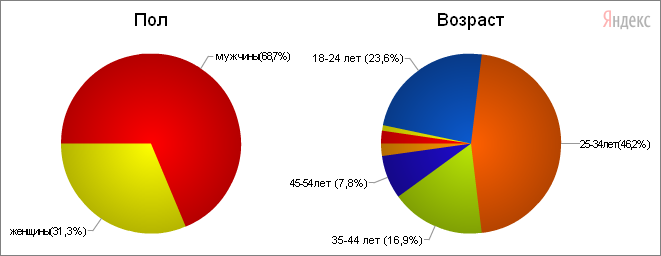
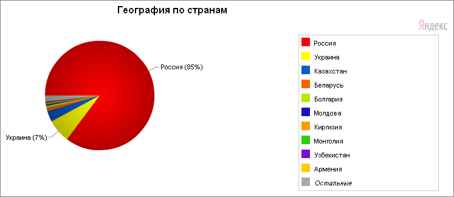
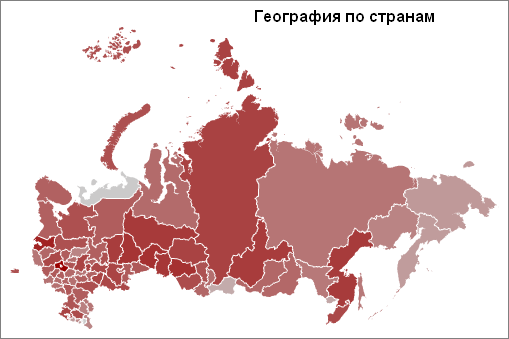
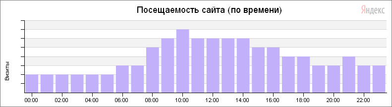
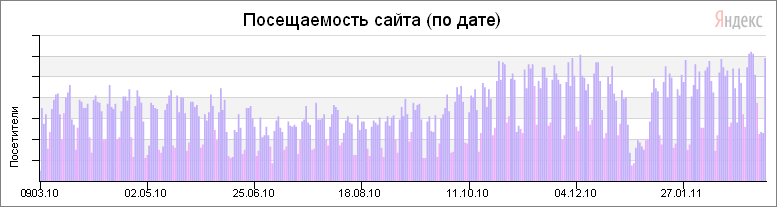

Статистический портрет пользователя MapInfo
- Большой Брат
- Анализируй это!
- Браузеры
- Операционные системы
- Половозростная структура
- География по странам
- Распределение по времени
- The End
Большой Брат
24 января 2009 года Яндекс предоставил общий доступ к одному из своих сервисов, что был изначально предназначен только для рекламодателей Директа. Сервис этот называется Яндекс.Метрика и предназначен он для оценки посещаемости веб-сайтов, и анализа поведения пользователей.
Физически, Метрика от Яндекса работает по принципу обычного счетчика посещений: JS-скрипт устанавливается на страницах сайта и собирает данные о каждом визите. Собранные же счетчиком сведения формируются в отчеты в виде таблиц и графиков. Примечательно, что Метрика работает в режиме онлайн, поскольку данные пересчитываются каждые 5 минут. А интервал между действиями пользователя на веб-ресурсе и появлением информации об этом в отчетах, как правило, сводится к 15 минутам. По сути, Метрика позволяет получить ответ на вопрос, что же происходит на сайте после перехода на него посетителя. И, кроме того, Метрика позволяет проводить анализ привлеченной аудитории в самых, что ни на есть различных разрезах.
9 марта 2010 года на сайт glab2007.narod.ru был установлен счетчик Яндекс.Метрики. С этого момента начался сбор информации о посетителях, их посещениях и запросах. Не стоит волноваться – статистика абсолютно анонимна, но от этого не менее интересна.
Анализируй это!
И, полагаю, интересна она не только владельцу сайта. Как-никак, ресурс этот тематический и случайных посетителей здесь, в принципе, быть не должно. То есть, можно говорить, с известной оглядкой, что статистика по тематическому сайту имеет если не прямую зависимость, то хотя бы корреляцию с основной массой пользователей MapInfo.
Конечно же, собранные статистические данные грешат неточностями, особенно в части демографических исследований. Вряд ли сотрудник Яндекса выпрыгивает из компьютера и переписывает паспортные данные пользователя. Вряд ли до конца точны данные географического анализа, так как подменить IP довольно легко. И, в конце концов, далеко не все пользователи MapInfo рыскают в Интернете. И все же, давайте посмотрим – кто он, пользователь MapInfo по версии сайта glab2007.narod.ru.
Приведенные диаграммы и таблицы являются полной копией отчетов счетчика Яндекс.Метрики по сайту за период от 9 марта 2010 года по 9 марта 2011 года.
Браузеры
Довольно любопытно, не правда ли? Opera и FireFox забирают почти 70% от общего число браузеров. Internet Explorer (MSIE) сдает позиции, хотя на первый месяц сбора статистики IE лидировал безоговорочно.
| Браузер | Доля визитов | Глубина просмотра | Время на сайте |
| Firefox 1.x | 0,31% | 1 | 0:00:00 |
| Firefox 2.0 | 0,25% | 1,8 | 0:03:22 |
| Firefox 3.0 | 2,35% | 1,9 | 0:02:18 |
| Firefox 3.5 | 5,61% | 1,8 | 0:03:10 |
| Firefox 3.6 | 21,19% | 1,7 | 0:02:20 |
| Firefox 4.0 | 0,14% | 1,7 | 0:04:15 |
| Google Chrome 1.0 | 0,01% | 1 | 0:00:00 |
| Google Chrome 2.0 | 0,14% | 4,2 | 0:07:02 |
| Google Chrome 3.0 | 0,04% | 2,2 | 0:06:17 |
| Google Chrome 4.x | 0,75% | 3 | 0:04:11 |
| Google Chrome 5.0 | 1,37% | 2,3 | 0:04:13 |
| Google Chrome 6.0 | 1% | 1,9 | 0:02:03 |
| Google Chrome 7.0 | 0,95% | 1,9 | 0:02:34 |
| Google Chrome 8.0 | 2,27% | 1,6 | 0:03:01 |
| Google Chrome 9.0 | 1,52% | 1,5 | 0:02:31 |
| Google Chrome 10.0 | 0,05% | 1,6 | 0:01:47 |
| Google Chrome 11.0 | 0,01% | 1,7 | 0:04:12 |
| MSIE 4.01 | 0,02% | 1,3 | 0:00:10 |
| MSIE 5.0x | 0,36% | 1 | 0:00:00 |
| MSIE 5.5 | 0,07% | 1 | 0:00:00 |
| MSIE 6.0 | 8,34% | 1,6 | 0:01:45 |
| MSIE 7.0 | 6,18% | 2,1 | 0:03:11 |
| MSIE 8.0 | 7,07% | 2,2 | 0:03:10 |
| MSIE 9.0 | 0,08% | 3 | 0:05:13 |
| Opera 7.2x | 0,03% | 1 | 0:00:00 |
| Opera 7.5x | 0,04% | 1 | 0:00:00 |
| Opera 8.0x | 0,08% | 1 | 0:00:00 |
| Opera 8.5x | 0,24% | 1 | 0:00:00 |
| Opera 9.0x | 0,13% | 1 | 0:00:00 |
| Opera 9.10 | 0,07% | 1,9 | 0:03:11 |
| Opera 9.2x | 1,62% | 1,6 | 0:01:47 |
| Opera 9.5x | 0,86% | 1,3 | 0:00:56 |
| Opera 9.6x | 2,66% | 1,8 | 0:02:47 |
| Opera 10.0x | 1,86% | 1,8 | 0:02:42 |
| Opera 10.10 | 3,06% | 1,7 | 0:02:13 |
| Opera 10.20 | 0,01% | 1 | 0:00:00 |
| Opera 10.50 | 0,51% | 1,9 | 0:03:02 |
| Opera 10.5x | 5,59% | 1,9 | 0:03:24 |
| Opera 10.6x | 13,15% | 1,5 | 0:02:02 |
| Opera 10.70 | 0,1% | 1,3 | 0:01:09 |
| Opera 11.0x | 7,51% | 1,6 | 0:01:37 |
| Opera Mini (все версии) | 0,44% | 1,5 | 0:02:52 |
| Avant Browser (все версии) | 0,19% | 2,1 | 0:06:00 |
| Maxthon (все версии) | 0,52% | 2,1 | 0:01:42 |
| MyIE2 (все версии) | 0,4% | 1,4 | 0:01:27 |
| NetCaptor (все версии) | 0,05% | 1,8 | 0:01:39 |
| Safari (все версии) | 0,34% | 1,3 | 0:02:34 |
| SeaMonkey (все версии) | 0,09% | 1,8 | 0:10:04 |
| Другие или не определено | 0,32% | 1,3 | 0:01:41 |
Встречалась также такая экзотика, как K-Meleon, Trident, Minefield etc., но в таблицу они не попали из-за малого количества посещений (менее 1%).
Операционные системы
Подавляющее, безоговорочное превосходство ОС семейства Windows. Ну, впрочем, это и не удивительно. Удивительно, скорее, наличие иных ОС. Опять же – за год значительно выросло количество компьютеров с Windows 7, преимущественно, за счет Windows Vista. Показатели Windows XP остались практически неизменными.
| Операционная система | Доля визитов | Глубина просмотра | Время на сайте |
| Windows XP | 72,56% | 1,8 | 0:02:38 |
| Windows Vista | 6,01% | 1,7 | 0:02:32 |
| Windows 7 или 2008 Server | 17,12% | 1,8 | 0:02:34 |
| Windows 2003 Server или XP Pro x64 | 1,3% | 1,5 | 0:01:14 |
| Windows 2000 | 0,99% | 1,1 | 0:00:29 |
| Windows NT 4.0 | 0,05% | 1 | 0:00:00 |
| Windows Me | 0,04% | 1 | 0:00:00 |
| Windows 98 | 0,23% | 1 | 0:00:00 |
| Windows (другие или не определено) | 0,07% | 1,2 | 0:01:12 |
| Ubuntu (все версии) | 0,23% | 1,3 | 0:00:04 |
| Linux (другие или не определено) | 0,2% | 1,7 | 0:01:06 |
| FreeBSD | 0,17% | 1 | 0:00:00 |
| Mac OS X (все версии) | 0,13% | 1,5 | 0:06:00 |
| Google Android | 0,03% | 1,2 | 0:02:44 |
| SymbianOS | 0,01% | 1 | 0:00:00 |
| Другие или не определено | 0,85% | 1,3 | 0:01:52 |
Linux, даже если собрать весь зоопарк дистрибьютивов в одно значение, не набрал и половины процента. Весьма иллюстративно.
Половозростная структура
 Опять же, ничего удивительного. Мужчин больше, чем женщин, абсолютное большинство посетителей находятся в активном возрасте. Хотя то, что девушек (18-24) удельно в два раза больше, чем юношей, безусловно, заставляет задуматься. В основном, о достоверности Метрики.
| Возраст | Пол | Доля визитов | Глубина просмотра | Время на сайте |
| 11 лет и младше | мужчины | 3,00% | 1,6 | 0:07:16 |
| 11 лет и младше | женщины | 0,90% | 3,2 | 0:02:36 |
| 12-17 лет | мужчины | 0,80% | 1,7 | 0:02:35 |
| 12-17 лет | женщины | 1,40% | 1,5 | 0:00:53 |
| 18-24 лет | мужчины | 16,50% | 1,7 | 0:01:59 |
| 18-24 лет | женщины | 38,70% | 1,6 | 0:02:00 |
| 25-34 лет | мужчины | 50,90% | 1,7 | 0:02:32 |
| 25-34 лет | женщины | 36,60% | 1,9 | 0:02:24 |
| 35-44 лет | мужчины | 17,40% | 1,5 | 0:01:43 |
| 35-44 лет | женщины | 15,30% | 1,7 | 0:02:01 |
| 45-54 лет | мужчины | 8,80% | 1,8 | 0:02:21 |
| 45-54 лет | женщины | 5,90% | 2,2 | 0:04:41 |
| 55 лет и старше | мужчины | 2,60% | 2,1 | 0:02:20 |
| 55 лет и старше | женщины | 1,20% | 2,1 | 0:02:32 |
География по странам
Лидирует Россия, затем, с большим отрывом, Украина и Казахстан. Этому, конечно, есть объяснение – сайт на русском языке и в русском домене. Но… Боюсь, причина не только в этом.
| Местоположение | Доля визитов | Глубина просмотра | Время на сайте |
| Россия | 80,65% | 1,8 | 0:02:32 |
| Украина | 6,58% | 1,8 | 0:02:43 |
| Казахстан | 2,99% | 1,6 | 0:02:41 |
| Беларусь | 0,94% | 1,8 | 0:01:53 |
| Болгария | 0,6% | 2,9 | 0:06:42 |
| Молдова | 0,36% | 2,3 | 0:03:09 |
| Киргизия | 0,32% | 2,1 | 0:02:30 |
| Монголия | 0,29% | 1,4 | 0:03:54 |
| Узбекистан | 0,21% | 1,9 | 0:01:45 |
| Армения | 0,13% | 2,1 | 0:04:11 |
| Эстония | 0,13% | 2,5 | 0:02:41 |
| США | 0,11% | 1,2 | 0:00:35 |
| Сербия | 0,11% | 1 | 0:00:04 |
| Великобритания | 0,11% | 1,7 | 0:02:16 |
| Азербайджан | 0,1% | 1,6 | 0:01:35 |
| Грузия | 0,09% | 2,2 | 0:04:19 |
| Таджикистан | 0,08% | 3,3 | 0:07:00 |
| Германия | 0,07% | 1,1 | 0:00:07 |
| Литва | 0,05% | 2,8 | 0:02:46 |
| Вьетнам | 0,05% | 1,4 | 0:00:38 |
| Латвия | 0,05% | 1,9 | 0:03:01 |
| Канада | 0,05% | 1,2 | 0:01:28 |
| Израиль | 0,04% | 1,3 | 0:00:45 |
| Франция | 0,04% | 1,2 | 0:00:37 |
| Бразилия | 0,03% | 2,2 | 0:02:57 |
| Индонезия | 0,03% | 2 | 0:02:18 |
| Другие или не определено | 5,76% | 1,7 | 0:02:12 |
А вот как распределяется пользовательская активность по регионам России:
| Местоположение | Просмотры | Глубина просмотра | Время на сайте |
| Итого и средние: | 100% | 1,8 | 0:02:33 |
| Дальний Восток | 0,28% | 1,46 | 0:03:11 |
| Дальний Восток > Магаданская область | 0,09% | 2,6 | 0:07:25 |
| Дальний Восток > Приморский край | 1,2% | 1,3 | 0:00:48 |
| Дальний Восток > Республика Саха (Якутия) | 0,18% | 1,35 | 0:00:57 |
| Дальний Восток > Сахалинская область | 0,14% | 1,3 | 0:01:16 |
| Дальний Восток > Хабаровский край | 2,23% | 1,53 | 0:02:56 |
| Поволжье | 0,61% | 1,8 | 0:03:41 |
| Поволжье > Кировская область | 0,45% | 2,4 | 0:02:25 |
| Поволжье > Нижегородская область | 1,49% | 1,73 | 0:01:26 |
| Поволжье > Оренбургская область | 1,27% | 1,35 | 0:01:46 |
| Поволжье > Пензенская область | 0,43% | 2,1 | 0:02:28 |
| Поволжье > Пермский край | 1,97% | 1,52 | 0:01:10 |
| Поволжье > Республика Башкортостан | 1,49% | 2,1 | 0:05:00 |
| Поволжье > Республика Марий Эл | 0,42% | 2,4 | 0:02:43 |
| Поволжье > Республика Мордовия | 0,18% | 1,7 | 0:01:45 |
| Поволжье > Республика Татарстан | 1,23% | 2,5 | 0:04:16 |
| Поволжье > Самарская область | 1,39% | 1,65 | 0:02:08 |
| Поволжье > Саратовская область | 0,92% | 1,6 | 0:01:31 |
| Поволжье > Удмуртская Республика | 0,88% | 1,58 | 0:07:14 |
| Поволжье > Ульяновская область | 0,38% | 2,1 | 0:03:03 |
| Поволжье > Чувашская Республика | 1,61% | 1,63 | 0:02:11 |
| Северный Кавказ | 0,06% | 2,6 | 0:05:05 |
| Северный Кавказ > Республика Дагестан | 0,08% | 3 | 0:04:20 |
| Северный Кавказ > Республика Кабардино-Балкария | 0,07% | 1,6 | 0:05:12 |
| Северный Кавказ > Ставропольский край | 1,08% | 1,58 | 0:03:24 |
| Северо-Запад | 0,93% | 1,9 | 0:03:16 |
| Северо-Запад > Архангельская область | 0,87% | 1,67 | 0:01:45 |
| Северо-Запад > Вологодская область | 0,84% | 1,35 | 0:01:26 |
| Северо-Запад > Калининградская область | 0,84% | 1,7 | 0:03:09 |
| Северо-Запад > Мурманская область | 0,42% | 1,73 | 0:01:11 |
| Северо-Запад > Новгородская область | 0,32% | 1,7 | 0:02:33 |
| Северо-Запад > Псковская область | 0,17% | 1,95 | 0:03:42 |
| Северо-Запад > Республика Карелия | 0,45% | 1,5 | 0:04:18 |
| Северо-Запад > Республика Коми | 0,51% | 2,54 | 0:05:13 |
| Северо-Запад > Санкт-Петербург и Ленинградская область | 6,69% | 1,49 | 0:02:08 |
| Сибирь | 0,67% | 1,5 | 0:02:55 |
| Сибирь > Алтайский край | 1,06% | 1,53 | 0:02:15 |
| Сибирь > Забайкальский край | 0,32% | 3,15 | 0:12:26 |
| Сибирь > Иркутская область | 2,12% | 1,8 | 0:02:24 |
| Сибирь > Кемеровская область | 0,81% | 1,76 | 0:03:07 |
| Сибирь > Красноярский край | 1,65% | 1,89 | 0:04:17 |
| Сибирь > Новосибирская область | 3,39% | 1,38 | 0:01:52 |
| Сибирь > Омская область | 2,63% | 1,9 | 0:04:53 |
| Сибирь > Республика Алтай | 0,32% | 2 | 0:01:44 |
| Сибирь > Республика Бурятия | 0,32% | 1,5 | 0:02:49 |
| Сибирь > Республика Хакасия | 0,24% | 1,3 | 0:00:59 |
| Сибирь > Томская область | 1,53% | 1,68 | 0:01:14 |
| Урал | 0,22% | 2,1 | 0:06:25 |
| Урал > Курганская область | 0,64% | 1,4 | 0:01:57 |
| Урал > Свердловская область | 3,02% | 1,53 | 0:01:22 |
| Урал > Тюменская область | 3,34% | 2,04 | 0:01:34 |
| Урал > Ханты-Мансийский АО | 2,31% | 1,41 | 0:01:18 |
| Урал > Челябинская область | 0,54% | 2 | 0:02:32 |
| Урал > Ямало-Ненецкий АО | 0,27% | 2,96 | 0:07:46 |
| Центр | 0,31% | 1,6 | 0:03:17 |
| Центр > Белгородская область | 0,38% | 1,35 | 0:01:40 |
| Центр > Брянская область | 0,2% | 2,2 | 0:02:02 |
| Центр > Владимирская область | 0,75% | 1,38 | 0:02:55 |
| Центр > Воронежская область | 0,63% | 1,9 | 0:02:26 |
| Центр > Ивановская область | 0,24% | 2,9 | 0:05:12 |
| Центр > Калужская область | 0,58% | 1,55 | 0:02:49 |
| Центр > Костромская область | 0,1% | 1,7 | 0:00:58 |
| Центр > Курская область | 0,21% | 1,5 | 0:01:51 |
| Центр > Липецкая область | 0,36% | 1,9 | 0:01:23 |
| Центр > Москва и Московская область | 29,51% | 1,85 | 0:02:04 |
| Центр > Орловская область | 0,25% | 2,1 | 0:02:29 |
| Центр > Рязанская область | 0,28% | 1,9 | 0:02:31 |
| Центр > Смоленская область | 0,58% | 2,23 | 0:06:41 |
| Центр > Тамбовская область | 0,21% | 1,67 | 0:01:44 |
| Центр > Тверская область | 1,72% | 1,96 | 0:03:40 |
| Центр > Ярославская область | 0,49% | 1,82 | 0:06:45 |
| Юг | 0,21% | 1,8 | 0:01:25 |
| Юг > Астраханская область | 0,17% | 2,8 | 0:03:21 |
| Юг > Волгоградская область | 0,5% | 1,43 | 0:01:21 |
| Юг > Краснодарский край | 1,54% | 2,22 | 0:03:11 |
| Юг > Республика Калмыкия | 0,11% | 1,6 | 0:01:55 |
| Юг > Ростовская область | 0,72% | 1,46 | 0:01:38 |
| прочие | 2,36% | 1,9 | 0:03:43 |
Лидируют Москва и Санкт-Петербург. Ну, оно и понятно – доступ в Интернет в этих регионах несколько более развит, чем на остальной территории России. По всем остальным регионам значения распределились более-менее равномерно. Но, надо заметить, в пересчете на количество населения, Москва не так уж и опережает ту же Тюмень: 2 визита на миллион жителей в Москве против 1 визита – в Тюмени.
Распределение по времени
Мы увидели кто, как и откуда заходит на сайт. Остается узнать – когда наиболее активны пользователи MapInfo.
Что ж, здесь тоже никаких особых сюрпризов:
Пик посещений приходится на утренне-дневные часы, т.е., с учетом восточных территории, на рабочие время.
Так же и с распределением активности по дням недели: минимум посещений приходится на выходные и праздничные дни:
The End
Вот, пожалуй, и все. То есть – Яндекс.Метрика предоставляет гораздо больше информации, чем приведено в этой статье. Но эти сведения касаются только самого сайта и могут быть интересны разве что его владельцу.
Портрет же пользователя MapInfo, согласно отчетам, оказался весьма предсказуемым. Он пользуется Opera или Mozilla, на компьютере у него Windows, он довольно молод и живет, по преимуществу, в России. Днем работает, ночью спит. По выходным о работе думает мало, что, впрочем, даже хорошо.
Думаю, не стоит еще раз подробно объяснять, почему приведенные данные могут служить лишь иллюстрацией к размышлению, но никак не руководством к действию. Никто не знает методик ни сбора информации, ни ее анализа, да и выборка не так уж репрезентативна. Вместе с тем, надеюсь, картинка получилась весьма любопытной и кое в чем наглядной.